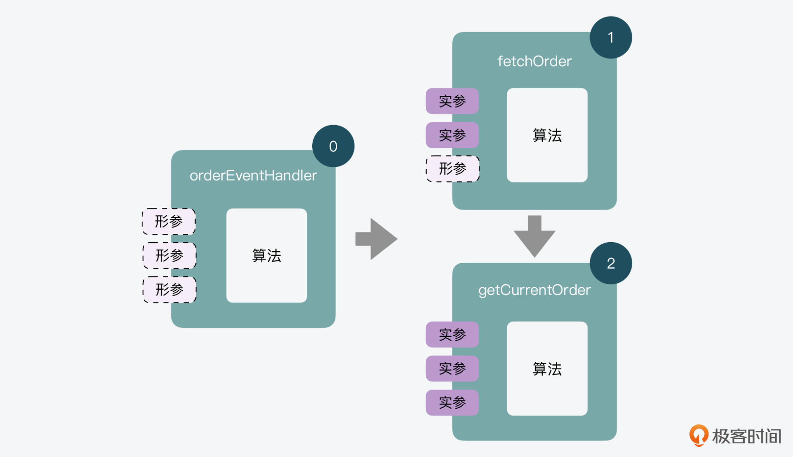
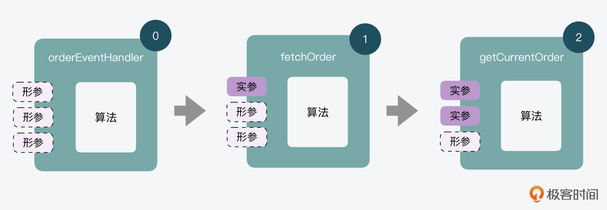
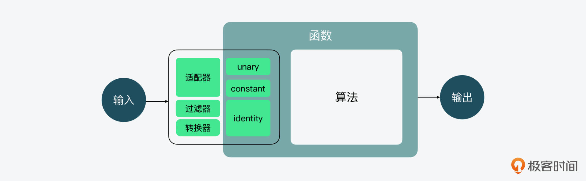

- 00 开篇词 JavaScript的进阶之路.md
- 01 函数式vs.面向对象：响应未知和不确定.md
- 02 如何通过闭包对象管理程序中状态的变化？.md
- 03 如何通过部分应用和柯里化让函数具象化？.md
- 04 如何通过组合、管道和reducer让函数抽象化？.md
- 05 map、reduce和monad如何围绕值进行操作？.md
- 06 如何通过模块化、异步和观察做到动态加载？.md
- 07 深入理解对象的私有和静态属性.md
- 08 深入理解继承、Delegation和组合.md
- 09 面向对象：通过词法作用域和调用点理解this绑定.md
- 10 JS有哪8种数据类型，你需要注意什么？.md
- 11 通过JS引擎的堆栈了解闭包原理.md
- 12 JS语义分析该用迭代还是递归？.md
- 13 JS引擎如何实现数组的稳定排序？.md
- 14 通过SparkPlug深入了解调用栈.md
- 15 如何通过哈希查找JS对象内存地址？.md
- 16 为什么环形队列适合做Node数据流缓存？.md
- 17 如何通过链表做LRU_LFU缓存？.md
- 18 TurboFan如何用图做JS编译优化？.md
- 19 通过树和图看如何在无序中找到路径和秩序.md
- 20 算法思想：JS中分治、贪心、回溯和动态规划.md
- 21 创建型：为什么说Redux可以替代单例状态管理.md
- 22 结构型：Vue.js如何通过代理实现响应式编程.md
- 23 结构型：通过jQuery看结构型模式.md
- 24 行为型：通过观察者、迭代器模式看JS异步回调.md
- 25 行为型：模版、策略和状态模式有什么区别？.md
- 26 特殊型：前端有哪些处理加载和渲染的特殊“模式”？.md
- 27 性能：如何理解JavaScript中的并行、并发？（上）.md
- 28 性能：如何理解JavaScript中的并行、并发？（下）.md
- 29 性能：通过Orinoco、Jank Busters看垃圾回收.md
- 30 网络：从HTTP_1到HTTP_3，你都需要了解什么？.md
- 31 安全：JS代码和程序都需要注意哪些安全问题？.md
- 32 测试（一）：开发到重构中的测试.md
- 33 测试（二）：功能性测试.md
- 34 测试（三）：非功能性测试.md
- 35 静态类型检查：ESLint语法规则和代码风格的检查.md
- 36 Flow：通过Flow类看JS的类型检查.md
- 37 包管理和分发：通过NPM做包的管理和分发.md
- 38 编译和打包：通过Webpack、Babel做编译和打包.md
- 39 语法扩展：通过JSX来做语法扩展.md
- 40 Polyfill：通过Polyfill让浏览器提供原生支持.md
- 41 微前端：从MVC贫血模式到DDD充血模式.md
- 42 大前端：通过一云多端搭建跨PC_移动的平台应用.md
- 43 元编程：通过Proxies和Reflect赋能元编程.md
- 结束语 JavaScript的未来之路：源于一个以终为始的初心.md
03 如何通过部分应用和柯里化让函数具象化？
你好，我是石川。
在前面两节课里，我说过函数式编程的核心就是把数据作为输入，通过算法进行计算，最后输出结果。同时我也提到，在函数式+响应式编程中，面对未知、动态和不可控时，可以通过纯函数和不可变等手段减少副作用、增加确定性，及时地适应和调整。
那么现在你来想想，在输入、计算和输出这个过程中，什么地方是最难控制的呢？对，就是输入。因为它来自外界，而计算是在相对封闭的环境中，至于输出只是一个结果。
所以今天这节课，我们就来说说输入的控制。
部分应用和柯里化
在前面课程里也讲过，函数的输入来自参数，其中包括了函数定义时的形参和实际执行时的实参。另外，我们也通过React.js中的props和state以及JavaScript中的对象和闭包，具体了解了如何通过不可变，做到对运行时的未知状态变化的管理。
那今天，我们就从另外一个角度理解下对编程时“未知”的处理，即如果我们在编写一个函数时，需要传入多个实参，其中一部分实参是先明确的，另一部分是后明确的，那么该如何处理呢？
其实就是部分应用（partial application）和柯里化（currying）。下面我们就一起来看看函数式编程中，如何突破在调用点（call-site）传参的限制，做到部分传参和后续执行。
通过部分应用延迟实参传入
我们知道，函数式编程重在声明式和可读性，而且强调每个函数尽量解决一个单一问题。假设有一个orderEventHandler函数，它比较抽象，因此缺少可读性；又或者假设下面这个函数需要url、data和callback三个参数的输入，才能执行，我们预先知道它的url，却不知道它的data和callback。这时该怎么办呢？
function orderEventHandler(url,data,callback) {
// ..
}
要解决这些问题，我们就可以通过部分应用。下面是它的一个执行流程图。

也就是说，我们可以通过orderEventHandler函数，具象出一个专门的fetchOrder函数。通过这种方式，我们就提前预置了已知参数url，减少了后面需要传入的参数数量，同时也增加了代码的可读性。
function fetchOrder(data,cb) {
orderEventHandler( "http://some.api/order", data, cb );
}
可是如果我们想进一步具象化，预制一些参数怎么办？比如下面的getCurrentOrder，如果我们想把前面fetchOrder里的data，也内置成order: CURRENT_ORDER_ID，这样会大量增加代码结构的复杂性。
function getCurrentOrder(cb) {
getCurrentOrder( { order: CURRENT_ORDER_ID }, cb );
}
所以在函数式编程中，我们通常会使用部分应用。它所做的就是抽象一个partial工具，在先预制部分参数的情况下，后续再传入剩余的参数值。如以下代码所示：
var fetchOrder = partial( orderEventHandler, "http://some.api/order" );
var getCurrentOrder = partial( fetchOrder, { order: CURRENT_ORDER_ID } );
partial工具可以借助我们在上节课提到过的闭包，以及ES6中引入的…延展操作符（spread operator）这两个函数式编程中的利器来实现。
我先来说一下延展操作符，它的强大之处就是可以在函数调用或数组构造时，将数组表达式或者string在语法层面展开。在这里，我们可以用它来处理预置的和后置的实参。而闭包在这里再次发挥了记忆的功能，它会记住前置的参数，并在下一次收到后置的参数时，可以和前面记住的前置参数一起执行。
var partial =
(fn,...presetArgs) =>
(...laterArgs) =>
fn( ...presetArgs, ...laterArgs );
除此之外，我们在上一讲里提到的bind也可以起到类似的作用。但 bind通常是在面向对象中用来绑定this的，用作部分应用的话会相对比较奇怪，因为这里我们不绑定this，所以第一个参数我们会设置为null。
当然，这么用确实不会有什么问题，但是一般来说，为了不混淆bind的使用场景，我们最好还是用自己定义的partial工具。
var fetchOrder = httpEvntHandler.bind( null, "http://some.api/order" );
通过柯里化每次传一个参数
我们接着来看看柯里化。
可以看到，在下面的例子中，我们把之前的httpEventHandler做了柯里化处理之后，就不需要一次输入3个参数了，而是每次只传入一个参数。第一次，我们传入了url来获取订单；之后，我们传入了当前订单的id；最后，我们获得了当前订单后，传入一个订单修改的参数来做相关修改。
var curriedOrderEvntHandler = curry( orderEventHandler );
var fetchOrder = curriedHttpEvntHandler( "http://some.api/order" );
var getCurrentOrder = fetchOrder( { order: CURRENT_ORDER_ID } );
getCurrentOrder( function editOrder(order){ /* .. */ } );
你同样可以来看一下它的一个执行流程图，看看柯里化是如何实现的。

实际上，和部分应用类似，这里我们也用到了闭包和…延展操作符。
在柯里化中，延展操作符可以在函数调用链中起到承上启下的作用。当然，市面上实现部分应用和柯里化的方式有很多，这里我选了一个“可读性”比较高的。因为和部分应用一样，它有效说明了参数前后的关系。
function curry(fn,arity = fn.length) {
return (function nextCurried(prevArgs){
return function curried(nextArg){
var args = [ ...prevArgs, nextArg ];
if (args.length >= arity) {
return fn( ...args );
}
else {
return nextCurried( args );
}
};
})( [] );
}
好了，通过部分应用和柯里化的例子，我们能够发现函数式编程处理未知的能力。但这里我还想强调一点，这个未知，跟我们说的应用在运行时的未知是不同的。这里的未知指的是编程时的未知，比如有些参数是我们提前知道的，而有一些是后面加入的。
要知道，一个普通的函数通常是在调用点执行时传入参数的，而通过部分应用和柯里化，我们做到了可以先传入部分已知参数，再在之后的某个时间传入部分参数，这样从时间和空间上，就将一个函数分开了。
而这样做除了一些实际的好处，比如处理未知，让函数从抽象变具体、让具体的函数每次只专心做好一件事、减少参数数量之外，还有一个更抽象的好处，就是体现了函数式底层的声明式思想。
在这里，我们让代码变得更可读。
还有哪些常用的参数处理工具？
在函数式编程中，我们把参数的数量叫做 arity。从上面的例子中，我们可以看到，部分应用可以减少每次函数调用时需要传入的参数，而柯里化更是把函数调用时需要传入的参数数量，降到了1。它们实际上都起到了控制参数数量的作用。
而在函数式编程中，其实还有很多可以帮助我们处理参数输入的工具。下面，我们就通过unary、constant和identity这几个简单的例子来一起看看。

改造接口unary
我们先来看看改造函数的工具。其中，最简单的工具就是一元参数（unary）了，它的作用是把一个接收多个参数的函数，变成一个只接收一个参数的函数。其实现也很简单：
function unary(fn) {
return function oneArg(arg){
return fn( arg );
};
}
你可能会问它有什么用？我来举个例子。
当你想通过parseInt，把一组字符串通过map来映射成整数，但是parseInt会接收两个参数，而如果你直接输入parseInt的话，那么“2”就会成为它的第二个参数，这肯定不是你期待的结果吧。
所以这时候，unary就派上用场了，它可以让parseInt只接收一个参数，从而就可以正确地打出你想要的结果。
["1","2","3","4","5"].map( unary( parseInt ) ); // [1,2,3,4,5]
看到这里，聪明的你可能会问：除了一元，会不会有二元、三元？答案是有的。二元就是binary，或是函数式中的“黑话”dyadic；三元就是tenary。顾名思义，它们分别代表的就是把一个函数的参数数量控制在2个和3个。
改造参数constant
如果你用过JavaScript promise的话，应该对then不陌生。从函数签名的角度来看，它只接收函数，而不接收其他值类型作为参数。比如下面例子中，34这个值就是不能被接收的。
promise1.then( action1 ).then( 34 ).then( action3 );
这里你可能会问，什么是函数签名？函数签名一般包含了参数及其类型返回值，还有类型可能引发或传回的异常，以及相关的方法在面向对象中的可用性信息（如关键字public、static或prototype）。你可以看到在C或C++中，会有类似这样的签名，如下所示：
// C
int main (int arga, char *argb[]) {}
// C++
int main (int argc, char **argv) {/** ... **/ }
而在JavaScript当中，基于它“放荡不羁”的特性，就没有那么多条条框框了，甚至连命名函数本身都不是必须的，就更不用说签名了。那么遇到then这种情况怎么办呢？
在这种情况下，我们其实可以编写一个只返回值的constant函数，这样就解决了接收的问题。由此也能看出，JavaScript在面对各种条条框框的时候，总是上有政策下有对策。
function constant(v) {
return function value(){
return v;
};
}
然后，我们就可以把值包装在constant函数里，通过这样的方式，就可以把值作为函数参数传入了。
promise1.then( action1 ).then( constant( 34 ) ).then( action3 );
不做改造identity
还有一个函数式编程中常用的工具，也就是identity，它既不改变函数，也不改变参数。它的功能就是输入一个值，返回一个同样的值。你可能会觉着，这有啥用？
function identity(v) {
return v;
}
其实它的作用也很多。比如在下面的例子中，它可以作为断言（predicate）， 来过滤掉空值。在函数式编程中，断言是一个可以用来做判断条件的函数，在这个例子里，identity就作为判断一个值是否为空的断言。
var words = " hello world ".split( /\s|\b/ );
words; // ['', '', '', 'hello', 'world', '', '']
words.filter( identity ); // ['hello', 'world']
当然，identity的功能也不止于此，它也可以用来做默认的转化工具。比如以下例子中，我们创建了一个transLogger函数，可以传入一个实际的数据和相关的lower功能函数，来将文字转化成小写。
function transLogger (msg,formatFn = identity) {
msg = formatFn( msg );
console.log( msg );
}
function lower(txt) {
return txt.toLowerCase();
}
transLogger( "Hello World" ); // Hello World
transLogger( "Hello World", lower ); // hello world
除了以上这些工具以外，还有更复杂一些的工具来解决参数问题。比如在讲部分应用和柯里化的时候，提到它在给我们带来一些灵活性的同时，也仍然会有一些限制，即参数的顺序问题，我们必须按照一个顺序来执行。而有些三方库提供的一些工具，就可以将参数倒排或重新排序。
重新排序的方式有很多，可以通过解构（destructure），从数组和对象参数中提取值，对变量进行赋值时重新排序；或通过延展操作符把一个对象中的一组值，“延展”成单独的参数来处理；又或者通过 .toString() 和正则表达式解析函数中的参数做处理。
但是，有时我们在灵活变通中也要适度，不能让它一不小心变成了“奇技淫巧”，所以对于类似“重新排序”这样的技巧，在课程中我就不展开了，感兴趣的话你可以在延伸阅读部分去深入了解。
总结
通过今天这节课，我们能看到在面对未知、动态和不可控时，函数式编程很重要的一点就是控制好输入。
在课程里，我们一起重点了解了函数的输入中的参数，知道部分应用和柯里化，可以让代码更好地处理编程中的未知，让函数从抽象变具体，让具体的函数每次只专心做好一件事，以及可以在减少参数的数量之外，还能够增加可读性。
另外，我们也学习了更多“个子小，功能大”的工具，我们不仅可以通过这些工具，比如unary和constant来改造函数和参数，从而解决适配问题；同时，哪怕是看上去似乎只是在“透传”值的identity，实际上都可以用于断言和转化。而这样做的好处，就是可以尽量提高接口的适应性和适配性，增加过滤和转化的能力，以及增加代码的可读性。
思考题
今天我们主要学习了柯里化，而与它相反的就是反柯里化（uncurry），那么你知道反柯里化的用途和实现吗？
欢迎在留言区分享你的答案，也欢迎你把今天的内容分享给更多的朋友。
延伸阅读
© 2019 - 2023 Liangliang Lee. Powered by gin and hexo-theme-book.